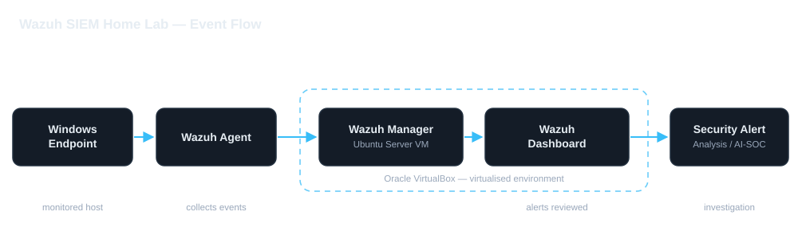

AI-Powered SOC & Security Monitoring Lab | Wazuh SIEM
A virtualised Security Operations Centre lab built to practise real monitoring work: centralised log collection, endpoint visibility, File Integrity Monitoring and alert investigation — with an OpenAI-powered component that explores how artificial intelligence can support alert triage in a SOC workflow.
Project overview
This is a home lab. Everything on this page was built and tested in my own virtualised environment for learning purposes. It is not production or enterprise work, and no real-world attack data or company systems are involved.
Security Operations Centres rely on being able to see what is happening across the systems they protect. The goal of this lab was to build that kind of visibility on a small scale so I could practise the day-to-day work of monitoring, investigating and understanding security events.
I deployed a Wazuh SIEM platform on an Ubuntu Server virtual machine, connected a Windows endpoint to it, configured File Integrity Monitoring to watch a directory I controlled, generated test events, and reviewed the resulting alerts in the Wazuh dashboard. I then extended the lab with an OpenAI-powered analysis component to explore how artificial intelligence can support the interpretation of alerts during an investigation.
Objectives
- Deploy and configure a working SIEM platform in a controlled lab.
- Gain centralised visibility of events from a Windows endpoint.
- Implement File Integrity Monitoring and generate my own detection events.
- Practise reading, triaging and understanding security alerts.
- Explore how OpenAI can assist a SOC analyst during alert analysis.
Lab architecture
How the pieces of the lab fit together and how events flow from the endpoint to analysis.

Windows Endpoint → Wazuh Agent → Wazuh Manager (Ubuntu Server VM) → Wazuh Dashboard → Security alert analysis → OpenAI-powered SOC analysis
Technologies used
Platforms & systems
AI & automation
Concepts & capabilities
Implementation & configuration
What I built, in the order I built it.
SIEM infrastructure deployment
- Created an Ubuntu Server virtual machine using Oracle VirtualBox.
- Installed and configured the Wazuh security monitoring platform.
- Established a centralised environment for collecting and reviewing endpoint security events.
Windows endpoint integration
- Installed the Wazuh Agent on a Windows host machine.
- Connected the endpoint to the Wazuh Manager.
- Verified agent communication and confirmed centralised endpoint monitoring.
File Integrity Monitoring
- Edited the Wazuh agent's
ossec.confconfiguration to monitor a custom Windows directory. - Created and modified test files to generate security events.
- Confirmed that Wazuh detected and reported the file integrity changes.
- Reviewed the resulting alerts through the Wazuh dashboard.
OpenAI-powered SOC analysis
- Expanded the lab with an OpenAI-powered security operations component.
- Explored how OpenAI can support security alert interpretation and SOC investigation workflows.
- Integrated the AI-assisted analysis into the broader Wazuh monitoring project.
Security monitoring & detection
With the endpoint enrolled, the lab gave a single place to observe activity from the monitored Windows host. To test detection rather than just installation, I used File Integrity Monitoring — a Wazuh capability that watches chosen files and directories and raises an alert when they are changed.
What I tested
- Pointed the agent's FIM configuration at a custom directory under my control.
- Created new files in that directory and then modified them.
- Observed Wazuh detect each change and raise a corresponding alert.
- Opened each alert in the dashboard to review what changed, when, and on which endpoint.
Why it mattered
File Integrity Monitoring is a practical example of how defenders detect unwanted change — for instance, an attacker or a piece of malware altering configuration files. By generating the events myself and then reading the resulting alerts, I practised the core SOC loop: something happens → the tool detects it → the analyst investigates and decides what it means.
AI-assisted SOC functionality (OpenAI)
Combining Wazuh SIEM security monitoring with an OpenAI-powered SOC analysis component.
This is an AI-assisted cybersecurity project. Security teams routinely receive more alerts than they can review manually, so this part of the lab explored how OpenAI can support the analyst rather than replace them — using it as an assistant to help interpret what an alert means and to suggest plausible next steps for investigation.
- Combined Wazuh SIEM security monitoring with an OpenAI-powered SOC analysis component.
- Used OpenAI to help explain Wazuh alerts in plain language and summarise the supporting detail.
- Used it to suggest investigation questions and plausible next steps for triage.
- Kept a human decision in the loop — the AI supports triage; it does not make the final call.
Adding AI here was not novelty for its own sake. It reflects a genuine interest in how artificial intelligence is being applied to security operations, and in learning where it genuinely helps an analyst and where human judgement is still required.
Still to confirm. OpenAI is confirmed as the AI service used in this
lab, but the following technical details are deliberately not stated here because
they have not been verified: the specific OpenAI [ MODEL — TO BE ADDED ], the
exact [ API IMPLEMENTATION / INTEGRATION — TO BE ADDED ], and whether the
workflow performs any [ AUTOMATED RESPONSE — NONE CONFIRMED ]. No performance
metrics, detection statistics or automation claims are made anywhere on this page.
Challenges & lessons learned
The practical experience this lab gave me, and what I took away from it.
Everything below describes work I actually did in my own virtualised lab. Where a detail has not been recorded, it is left out rather than filled in with a guess.
What I worked through
- Deploying Wazuh on Ubuntu Server through VirtualBox — building the Linux server virtual machine and getting the Wazuh platform running inside it.
- Integrating a Windows endpoint — installing the Wazuh Agent on a Windows host and getting it to communicate with and report to the Wazuh Manager.
- Configuring and testing File Integrity Monitoring — pointing Wazuh at a directory I controlled and generating real alerts by changing files in it.
- Exploring OpenAI-assisted security analysis — adding an OpenAI-powered component to help interpret alerts and support SOC-style analysis.
- Evaluating hardware limitations — assessing what my machine could realistically run when planning additional virtual machines for the lab.
What I learned
- A SIEM is only as useful as the data reaching it — endpoint integration and log collection have to be right before analysis means anything.
- Detection becomes much more tangible when you generate the events yourself and then read the resulting alerts, rather than just reading about it.
- AI is genuinely useful for interpreting and summarising alerts, but it needs a human to validate the output and make the final call.
- Lab planning is a resource problem: hardware limits decide how many virtual machines — and which attack simulations — are actually realistic.
- Multi-VM labs involve a lot of networking, configuration and troubleshooting before anything works end to end.
Screenshots & evidence
Click any image to view it enlarged. Every frame below is a real capture from my own lab, redacted before publishing.
Privacy note. Any sensitive information visible in these screenshots — IP addresses, hostnames, account names, Windows Security IDs and similar — is redacted before publishing. Nothing identifying from my own home network or accounts is shown.
rule.groups: syscheck. Four file
changes were detected in the monitored test folder and raised rule 553 (level 7)
for deletions and rule 554 (level 5) for additions. Agent name and part of the
path are redacted.
alerts.json; a
Python component reads new alerts, de-duplicates them against a checkpoint and
filters to level 7 and above; the OpenAI API returns a structured triage; the
report is written out and the checkpoint advances so the same alert is never
analysed twice.
rw------- permissions — owner read and write only, with no group or
world access. Username and group are redacted.
Planned improvements
Not yet done. Everything below is planned future work. None of it has been implemented yet, and it is listed here so the difference between what I have built and what I intend to build is clear.
Completed so far
- Wazuh SIEM deployed on an Ubuntu Server virtual machine.
- Windows endpoint enrolled and monitored by the agent.
- File Integrity Monitoring configured and test alerts generated.
- Alerts reviewed and investigated in the Wazuh dashboard.
- OpenAI-powered alert analysis added and explored as a SOC workflow component.
Planned next
- Deploy a Kali Linux attacker machine as the offensive side of the lab.
- Run controlled attack simulations inside the isolated lab network.
- Work through additional alert investigation scenarios using the alerts those simulations generate.
- Continue developing the AI-assisted SOC workflow built on OpenAI.
- Map detected activity to MITRE ATT&CK techniques.
- Grow the lab further within the hardware limits identified during this build.